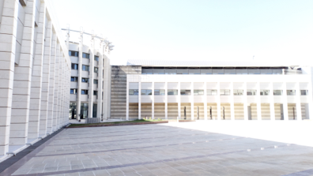

Nikolaos Dikaios, Ph.D (Cantab)
Physicist, Computer Scientist interested in tomography, inverse problems, cancer informatics and physics.
open researcher id
Physicist, Computer Scientist interested in tomography, inverse problems, cancer informatics and physics.
open researcher idI am a Research Scientist (Associate Professor level) at the Mathematics Research Center, Academy of Athens. I completed my DPhil (2012) in medical physics from the University of Cambridge and worked in Magnetic Resonance Imaging (MRI) as a research associate at UCL until 2016. Prior to my appointment at the Academy of Athens in 2020 I was an Assistant Professor (tenure), at the department of Electrical Engineering, University of Surrey where I am currently a Visiting Assistant Professor. Since 2018, I am a Fellow of the Higher Educational Academy from the UK Professional Standards Framework for teaching and learning support in higher education (Recognition reference: PR158316). Further, since 2024, I am a member of the Scientific Council of the Research Centers of the Academy of Athens. My research interests include tomography, inverse problems, cancer informatics and physics, where to date (07/2023) I have published 56 peer-reviewed papers (12 as first author, 3 as single author and 7 as last author), 1 book chapter and >30 refereed proceedings at major international conferences.
In 2019 I have been awarded a Royal Society Fellowship to work with Elekta on the world's first linear accelerator integrated with high field Magnetic Resonance Imaging (MRI). The aim was to perform real- time visualization for truly adaptive radiotherapy, with a potential to monitor tumour response, so that treatment can be adjusted accordingly. I have also been awarded (2017) with the Engineering and Physical Sciences Research Council (EPSRC) first grant for the most promising UK researchers to work on imaging methods to optimize cancer treatment with high energy proton beams. My work in prostate cancer detection using multi-parametric MRI has been awarded twice with the Summa Cum Laude (top 5%) and once with Magna Cum Laude (top 15%) from the flagship conference in MRI (ISMRM) with more than 6000 attendees every year.
10/2024: This week I had the opportunity to chair the session of non-ionizing radiation at the panhellenic conference in medical physics.
09/2024: Launching a new special issue on the advancements in quantum biology
01/2024: New review paper on the role of attention mechanisms in medical image analysis
07/2023: This week we had the opportunity to participate at the 29th school-conference on dynamical systems and complexity at NCSR “DEMOKRITOS”.
04/2023: Examining a UCL PhD candidate on prescription dose optimization for personalized radiotherapy.
02/2023: New paper proposing a novel particle imaging filter.
01/2023: New paper on motion compensated PET image reconstruction via separable parabolic surrogates
07/2022: Join us in the 28th Summer School for Dynamical Systems and Complexity
04/2022: New paper on simple formulae, deep learning and elaborate modelling for the covid-19 pandemic
02/2022: New paper on the use of deep learning model for lung cancer lesion segmentation on PET/CT images
08/2021: Book chapter in piecewise polynomial inversion of the Radon transform in 3D.
06/2021: Joined the editorial board of the "Applied Sciences" journal.
05/2021: Released python scripts on tracer kinetic modelling in DCE MRI.
05/2021: New paper on new analytical transformations for radial MR Fingerprinting k-space data.
04/2021: Joined the editorial board of the "Artificial Intelligence in Cancer" journal.

Figure: Analytical transformations for radial MR Fingerprinting
Figure: This figure is a view of the cancer network in unified clusters.
2024-present Antonis Nikolakis is a PhD candidate on advanced molecular imaging techniques such as Magnetic Particle Imaging and MR Chemical Exchange Saturation Transfer. Antonis is funded by the National Strategic Reference Framework.
2024-present Nikoletta Konstantinidi is a PhD candidate on radiomic analysis for prostate cancer segmentation and detection based on multiparametric MR images. Nikoletta is funded by the National Strategic Reference Framework.
2024-present Athina Terzi is currently completing her Masters in Biomedical Engineering and will be starting her PhD on radiogenomic analysis for lung cancer detection based on PET/CT images. Athina is funded by the National Strategic Reference Framework.
 2021-present Stamatis Choudalakis is a Mathematician graduate pursuing his PhD in bioinformatics after completing his Masters in applied mathematics in 2023. He is currently working on Network Graphs that can reveal the relationships between different types of tumours and cancer genes. Stamatis is funded by the National Strategic Reference Framework.
2021-present Stamatis Choudalakis is a Mathematician graduate pursuing his PhD in bioinformatics after completing his Masters in applied mathematics in 2023. He is currently working on Network Graphs that can reveal the relationships between different types of tumours and cancer genes. Stamatis is funded by the National Strategic Reference Framework.
2021-2023 Dr. Nicholas E. Protonotarios worked till 2023 as a senior research associate on the radiogenomic analysis project which is funded by the Research Committee Academy of Athens. Nicholas is now a research scientist at the Mathematics Research Center, Academy of Athens and his main research interests include the mathematics of medical imaging and mathematical image reconstruction in PET, SPECT and MRI.
2020-present Evangelia Tzampazidou is a PhD student at the Mathematics Research Center of the Academy of Athens. Her aim is to explore novel image reconstruction methods for undersampled Magnetic Resonance Imaging data.


I am physically located at the Mathematics Research Center 4, Soranou Efesiou str., 11527 Athens. Tel. +30 210 6597 662. e-mail: ndikaios@academyofathens.gr 
I am always looking for talented and motivated master students and PhD candidates. If you are interested in my research, drop me an email. If funding is not available, I am keen to work with good candidates to obtain scholarships either internally or from external funders.